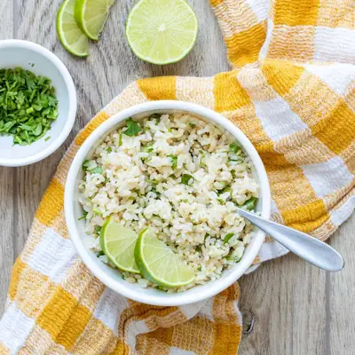

4 Ingredient Cilantro Lime Rice

Ingredients
- 2 cups cooked rice (brown, basmati, or white rice, use frozen rice for fast and easy option)
- 4 cups water
- ¼ cup chopped cilantro
- 3 - 4 teaspoons fresh lime juice
- ¼ - ¾ teaspoon sea salt (see note)
Steps
- Combine rice, water, and lime juice in your rice cooker, and cook following your rice cooker's instructions.
- Once cooked, remove lid and mix in sea salt and chopped cilantro.
- Serve alone or as part of a meal!
Recipe by Anjali Shah, from The Picky Eater. Saved here for personal use; the original has the full notes, tips and photos. Open original